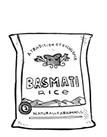

basmati rice
Basmati, meaning fragrant, is a variety of long, thin-grained aromatic rice traditionally cultivated in India. The rice has a pandan-like flavor, giving it a spicy fragrance. The level of the compound that gives basmati rice its distinctive aroma decreases in cooking, but if the rice is soaked 30 min before cooking it helps preserve more of it.
How to cook: Ratios of rice to water is 1:1.5 To cook basmati rice, rinse for a few minutes to get rid of the starch that makes the rice sticky. Add a bit of salt to the rice into the rice grains. Pour boiling water over the rice. Set pot over med-high heat, when water boils cover with lid so that no steam escapes. Reduce heat, cook for 15 min. After 15 min, remove from heat and let rest for another 5 min.
Weight: 1/2 cup | 3 1/2 oz | 99 g
rice
Rice is the seed of the grass species Oryza sativa (asian rice) or Oryza glaberrima (african rice). Rice is the most important grain with regard to human nutrition and caloric intake, providing more than one-fifth of the calories consumed worldwide by humans. Many varieties of rice are fortified to reduce malnutrition.